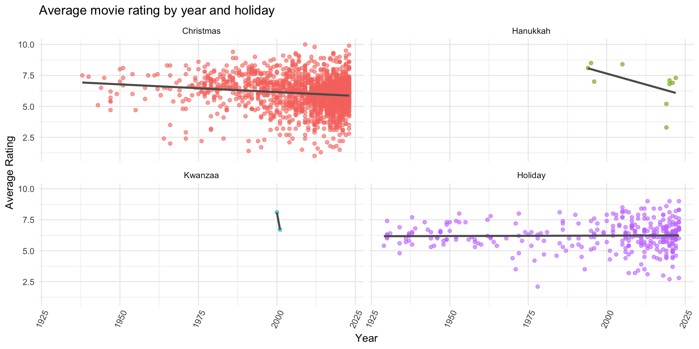
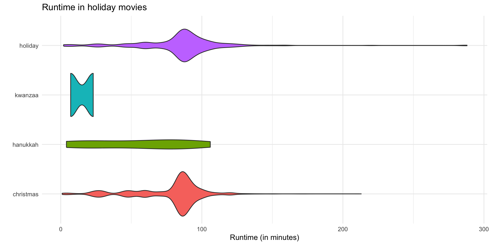

Project Presentation
Holiday Movies
Outline
Your presentation should generally follow the same structure as your write-up.
Each team will have 5 minutes for their presentation, and each team member must speak (roughly equally) during this time.
Your presentation will be created using
Quarto, which allows you to write slides using the same coding structure you’re used to withRmarkdown.This is a sample Quarto slide template you can edit to your desire to create your presentation.
Rubric
- Roughly I recommend 1 slide for introduction, 2 slides for Question 1, ans 2 slides for Question 2.
- You can imagine spending roughly one minute on each slide.
- You should feel free to have more (or fewer) slides.
- Your evaluation will be based on your content, professionalism (including sticking to time), and your performance during the Q&A (question and answer). We don’t care how many slides you use to do this.
Introduction
- Our dataset: Holiday Movies
- From TidyTuesday repository
- Dimensions: 2265x14
- Movies with “holiday”, “Christmas”, “Hanukkah”, or “Kwanzaa”
- We looked at trends relating to ratings, age, and run time of different holiday movies
- We chose this data set because we are interested in:
- relationship between movie types and public reception of them
- changes in movie style over time
- whether the holiday the movies were written for played a role in this
- We chose this data set because we are interested in:
Question 1 Graph 1
- How does type of holiday affect a movie’s rating, and for each holiday, how does the movie’s age affect its rating?
- We combined holidays into one column using pivot longer
- Our first graph is a density plot showing the average rating density by movie type
- Kwanzaa highest ratings (sample size)
- Hanukkah variance in ratings
Question 1 Graph 2
- Our second graph shows is aa scatterplot with line of best fit showing average rating by year for each holiday
- Decrease in ratings overtime
- Small samples for some holidays
- Fairly consistant
- OVERALL CONCLUSION
Question 2 Graph 1
- How do movie run times vary over time? Have holiday movies gotten longer over time? Shorter? Is there a significant difference of run time over time?
- Our first graph is a violin plot showing runtime by holiday

- Kwanzaa movies short runtimes
- Hanukkah next
- Christmas have longest, concentration around 90 minutes
- holiday movies in general -> 90 minutes but have a wide range
Question 2 Graph 2
- Our second graph is a a scatterplot showing runtime by year and holiday

- Runtime has increased slightly over the years
- Stayed fairly consistent for holiday movies overall
- OVERALL CONCLUSION
Question 2 Linear Model
library(moderndive)
holidays_lm <- lm(data = filtered_holiday_movies, runtime_minutes ~ year * holidays)
get_regression_table(holidays_lm)# A tibble: 8 × 7
term estimate std_error statistic p_value lower_ci upper_ci
<chr> <dbl> <dbl> <dbl> <dbl> <dbl> <dbl>
1 intercept -1125. 83.4 -13.5 0 -1.29e+3 -9.62e+2
2 year 0.598 0.042 14.4 0 5.17e-1 6.8 e-1
3 holidays: hanukkah -314. 1399. -0.224 0.823 -3.06e+3 2.43e+3
4 holidays: kwanzaa -30868. 71303. -0.433 0.665 -1.71e+5 1.09e+5
5 holidays: holiday 1216. 133. 9.15 0 9.56e+2 1.48e+3
6 year:holidayshanukkah 0.144 0.696 0.207 0.836 -1.22e+0 1.51e+0
7 year:holidayskwanzaa 15.4 35.6 0.432 0.666 -5.45e+1 8.53e+1
8 year:holidaysholiday -0.602 0.066 -9.06 0 -7.32e-1 -4.71e-1